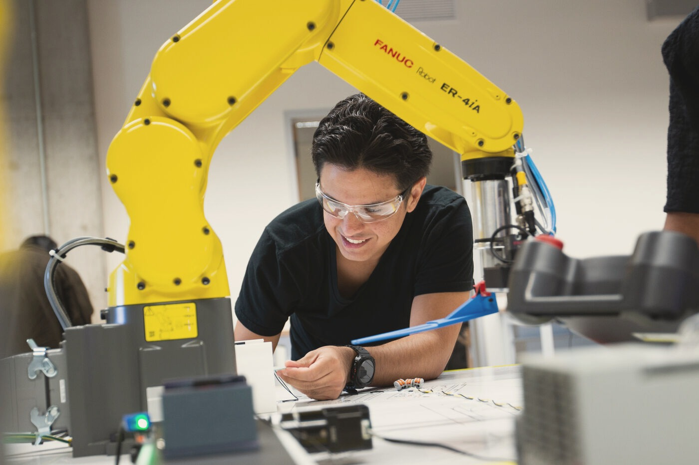
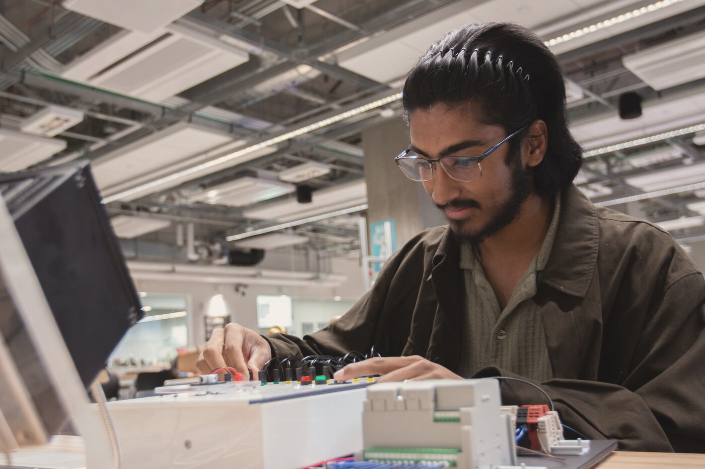

Coursework in progress in the lab.
Graduate course

RAS 545 - Robotic Systems I
A core course of ASU's Robotics and Autonomous Systems master's
program, taught by Dr. Sangram Redkar. Its guided laboratory
series - articulated robot programming on the lab's Dobot arms
and physics-based simulation in NVIDIA Isaac Sim - lives on
this site.
See the instructional labs ↓
Undergraduate course
RAS 101 - Foundations of Robotic Engineering I
First course of ASU's undergraduate robotics sequence:
robotic engineering as a profession, critical thinking in
robot design and modeling, team dynamics, and engineering
communication. Taught in this lab.
Undergraduate course
RAS 102 - Foundations of Robotic Engineering II
Second course of the undergraduate sequence: developing and
experimentally verifying robotic engineering models,
engineering design, data acquisition and analysis, and an
introduction to CADD. Taught in this lab.
Industry training

PLC and automation training
Hands-on programmable logic controller and industrial automation
training delivered by the lab's teaching team for industry
partners, using the lab's Allen-Bradley PLC workbenches and
robot cells.
The lab sits in the School of Manufacturing Systems and Networks,
whose Robotics and Autonomous Systems and manufacturing programs
include these related courses:
Course work in progress: students with a small quadcopter drone.